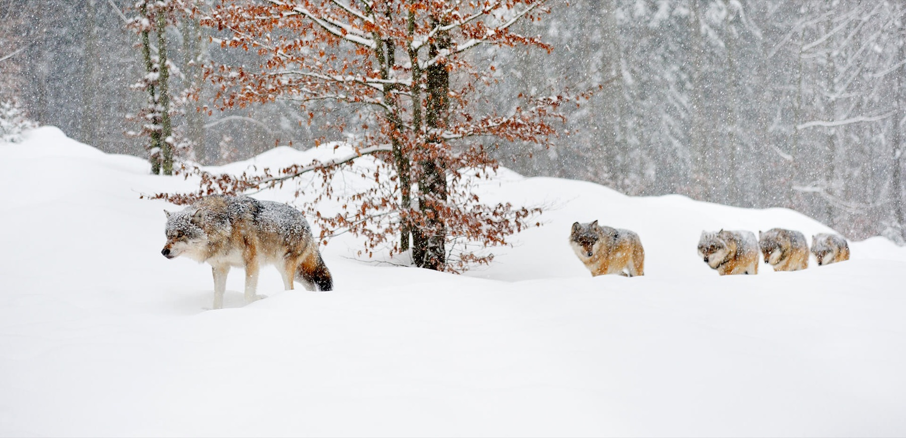
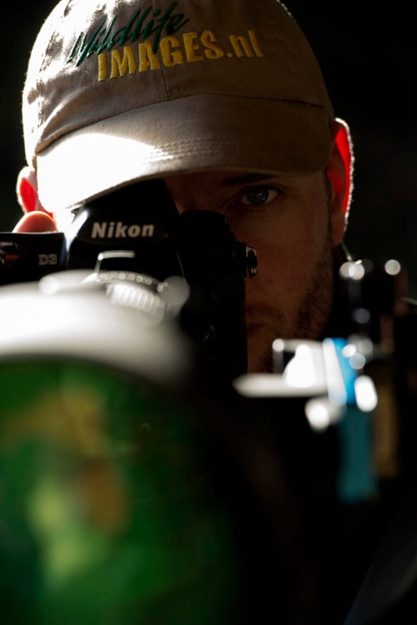

Duitsland · Lausitz
Vijf dagen in het landschap van de wolf
Bossen, heide, water en sporen van bruinkoolwinning vormen het landschap van de Lausitz.
Bossen, heide, water en sporen van bruinkoolwinning vormen het landschap van de Lausitz.
Bossen, heide, water en sporen van bruinkoolwinning vormen het landschap van de Lausitz. Hier, in de buurt van Cottbus, ga je op zoek naar de wolf. Je kijkt, wacht en leert herkennen wat het landschap over zijn bewoners vertelt.
Samen met twee wolfexperts en Marco verdiep je je in gedrag, sporen en leefgebied. Je brengt tijd door in de hoogzit en leert meer over onderzoek en monitoring.
Je verblijft in een klein, gemoedelijk pension dat tijdens deze dagen volledig voor de groep is gereserveerd.


Wil je meer weten over een workshop of fotoreis? Of wil je een foto bestellen? Stuur Marco de Paauw een WhatsApp-bericht.
+31 6 265 885 62
Stuur een WhatsApp-bericht